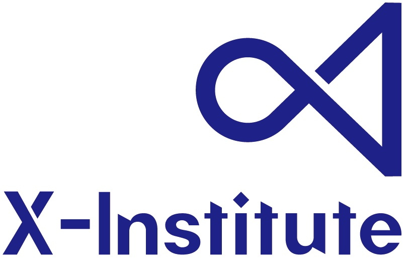

About Me个人简介
I am an undergraduate in Electronic Science and Technology at Shenzhen Technology University, building a foundation in electronics and circuits. Concurrently, as an X Scholar in a joint program with Tsinghua University and Shenzhen X-Institute, I am engaged in advanced research focusing on underactuated robotic grippers and novel mechanical linkages. My goal is to integrate my knowledge in electronics with hands-on robotics research to contribute to the field. 我目前是深圳技术大学电子科学与技术专业的本科生，致力于夯实电子电路与技术的基础。同时，作为清华大学钱学森班-深圳零一学院的零一学者，我正深入参与欠驱动机器人抓手及新型机械连杆等方向的前沿研究。我的目标是将电子领域的知识与机器人学的科研实践相结合，为未来在该领域的贡献做准备。
Education教育背景
Undergraduate:本科:

Shenzhen Technology University深圳技术大学
, Future Technology School -- Bachelor of Engineering in Electronic Science and Technology
, 未来技术学院 -- 电子科学与技术 工学学士
2022.09–2026.07
- Main Courses: C++, Python, Digital Circuits, Sensors and Actuators, Engineering Project Design主修课程: C++, Python, 数字电路, 传感器与执行器, 工程项目设计
- Main Research: Laser-Induced Breakdown Spectroscopy (LIBS)主要研究: 激光诱导击穿光谱 (LIBS)
Joint Training:联合培养:


2023.09–Present
- Main Research: Underactuated Robotic Grippers, Peaucellier Linkages, See Qian Class Step-by-Step Training Program主要研究: 欠驱动机器人抓手, 佩索利耶连杆, 见钱班进阶式培养计划
Publications学术出版
Honors & Awards荣誉奖项
Provincial-Level & Above省级及以上
Finalist, ASME Student Mechanism & Robot Design Competition
ASME 学生机械与机器人设计竞赛决赛入围
2025
View the competition details